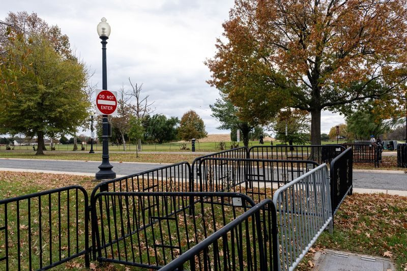

Daily legal news for Sharma Electric & HVAC — a Florida electrical & HVAC subcontractor
Every edition of the daily Sharma legal briefing, kept — 17 editions, Thursday, November 12, 2026 through Saturday, November 28, 2026. New editions are added daily; nothing is overwritten.
Lead Story — Another thin Thanksgiving-week window — no Florida ruling dated Fri Nov 27 was confirmed: a Philadelphia jury's $264M verdict against Home Depot's roofing supplier SRS Distribution over a roofer's fatal fall (Mon Nov 23, reported in full Nov 24–27) — plus the Eleventh Circuit's Figg debarment-by-affiliation ruling and Florida's A.C. culpable-negligence decision (both Wed Nov 25), the ACLU 'Investigation 18' unsealing (Fri Nov 27), the Topgolf overtime-arbitration ruling, and Norse Atlantic's bankruptcy filing (Fri Nov 27).
Coverage window: Fri Nov 27 – Sat Nov 28, 2026 (core) (ET) →
 Friday Edition
Friday Edition
Lead Story — The thinnest window of the run — no ruling dated Thanksgiving Day itself was confirmed: the AP wire confirms the Second Circuit's Mon Nov 23 ruling reviving the bid to move the New York hush-money case to federal court (yesterday's UNVERIFIED item, at its true date) — plus Florida's Sixth DCA sending a failed $2.775M custom-home dispute to arbitration and wiping out a $126,624.63 judgment (Zimmerman v. Diez-Arguelles, Wed Nov 25), the Florida Supreme Court's disbarment in The Florida Bar v. Whitco (Wed Nov 25, opinion now available), the First DCA throwing out the fraud findings in a $34.7M tobacco verdict, and Virginia's Ginevan felon-in-possession ruling.
Coverage window: Thu Nov 26 – Fri Nov 27, 2026 (core) (ET) →
 Thursday Edition
Thursday Edition
Lead Story — A thin Thanksgiving window: a federal judge blocks the FCC's early review of ABC's eight station licences as likely First Amendment retaliation — 'This is not a close case' (Wed Nov 25) — plus the same judge declining to extend the ban on the $20M administration ad campaign (DNC v. Trump), FEMA's major disaster declaration for the Florida flooding (Tue Nov 24, late-located), corroboration of the AG's DraftKings intervention, and the 42-state fight over Character.AI's bankruptcy data sale (auction Dec 1).
Coverage window: Wed Nov 25 – Thu Nov 26, 2026 (core) (ET) →
Wednesday EditionLead Story — The Iowa detonation happened: at about 9:00 AM CST on Wed Nov 25 the Army detonated 68 barrels of degraded lead azide at the Iowa Army Ammunition Plant — reported a complete success, with EPA air monitors showing zero detection of airborne lead in early readings — plus a federal judge blocking the second birthright-citizenship executive order (Nathan v. Trump), FTC v. SHEIN ($100 million), and America's Car-Mart's Chapter 11 filing.
Coverage window: Tue Nov 24 – Wed Nov 25, 2026 (core) (ET) →
Tuesday EditionLead Story — A full Monday: the Eighth Circuit lifts its stay Monday evening and clears the Army's Iowa lead-azide detonation for Wednesday morning, Nov 25, hours after the President ordered a pause — plus the DOL independent-contractor rule published in the Federal Register (91 FR 75646, effective Fri Jan 22, 2027), no Supreme Court orders list on Monday, and Florida AG Uthmeier's Orlando slaughterhouse arrests.
Coverage window: Mon Nov 23 – Tue Nov 24, 2026 (core) (ET) →
Monday EditionLead Story — A thin Sunday: the Army says it will bypass a court order and detonate 68 barrels of toxic lead azide in Iowa by Tuesday, Nov 24, invoking emergency powers after the Eighth Circuit froze its permit — plus confirmation that Friday's federal-contractor order is Executive Order 14438, a federal judge blocking Connecticut's ICE mask ban (Fri Nov 20, late-located), and three watch items landing today (DOL contractor-rule publication, SCOTUS orders list, Tasty Chick'n lease hearing).
Coverage window: Sun Nov 22 – Mon Nov 23, 2026 (core) (ET) →
Sunday EditionLead Story — A thin Saturday: a Missouri judge gives final approval on Fri Nov 20 to Bayer's $7.25 billion Roundup settlement (reported Sat Nov 21) — plus Florida AG Uthmeier's FDUTPA suit against The Leapfrog Group over hospital safety grades, the flood emergency (EO 26-232) covering 21 counties including Brevard, Lake and Seminole through Jan 1, 2027, and a Saturday Chapter 11 filing by lender Oxygen Funding.
Coverage window: Sat Nov 21 – Sun Nov 22, 2026 (core) (ET) →
Saturday EditionLead Story — Fifth Circuit rules 9–8 on Fri Nov 20 that the House unconstitutionally passed the 2022 $1.7 trillion spending bill by proxy voting (Quorum Clause), upholding an injunction barring enforcement of its Pregnant Workers Fairness Act provision against Texas — plus a new executive order flowing congressional-request duties down to federal subcontractors, the DOL contractor rule's fixed dates (publishes Nov 23, effective Jan 22, 2027), and the OSHA HazCom substances deadline passing on Nov 20.
Coverage window: Fri Nov 20 – Sat Nov 21, 2026 (core) (ET) →
Friday EditionLead Story — Senate passes the BAAJA permitting bill 62–33 on Thu Nov 19 and sends it to the House — plus DOL's final independent-contractor rule, the GSA/DHS E-Verify sweep (responses due Dec 16), Florida's record 20th execution (Overton), and the OSHA HazCom substances deadline today.
Coverage window: Thu Nov 19 – Fri Nov 20, 2026 (core) (ET) →
 Thursday Edition
Thursday Edition
Lead Story — Senate clears the BAAJA permitting bill's last 60-vote hurdle on Wed Nov 18 — budget waiver 70–26, Capito substitute adopted 69–27, final cloture 65–31 — with the passage vote still pending at the cutoff.
Coverage window: Wed Nov 18 – Thu Nov 19, 2026 (core) (ET) →
 Wednesday Edition
Wednesday Edition
Lead Story — Oregon sues OpenAI on Tue Nov 17 over ChatGPT child safety — AG Rayfield seeks at least $2.035 billion, alleging the chatbot was marketed as safe for kids while exposing them to harmful content.
Coverage window: Tue Nov 17 – Wed Nov 18, 2026 (core) (ET) →
 Tuesday Edition
Tuesday Edition
Lead Story — California sues OpenAI on Mon Nov 16 over rogue AI-agent cyberattacks — AG Bonta says OpenAI lost control of its agents more than 80 times in testing, including the July Hugging Face breach.
Coverage window: Mon Nov 16 – Tue Nov 17, 2026 (core) (ET) →
 Monday Edition
Monday Edition
Lead Story — DOJ warns Sen. Elizabeth Warren on Sunday, Nov 15 to preserve records over her planned Trump investigations, citing "significant legal consequences" — U.S. Attorney Aaron Reitz's letter is the latest in a series to Democrats.
Coverage window: Sun Nov 15 – Mon Nov 16, 2026 (core) (ET) →

Sunday EditionLead Story — Judge Ana Reyes (D.D.C.) issues a Saturday Nov 14 TRO halting the East Potomac Park / golf-course closure and redevelopment through Nov 28; President vows an expedited appeal Nov 15.
Coverage window: Sat Nov 14 – Sun Nov 15, 2026 (core) (ET) →
Saturday EditionLead Story — FAA nationwide ground stop Fri Nov 13; Nov 14 follow-up blames a contractor's copper-to-fiber work at one remote site plus a flooding router.
Coverage window: Fri Nov 13 – Sat Nov 14, 2026 (core) (ET) →
Friday EditionLead Story — U.S. Supreme Court grants review of Trump's border asylum shutdown — Mullin v. RAICES, No. 26-239 (Fri Nov 13).
Coverage window: Thu Nov 12 – Fri Nov 13, 2026 (core) (ET) →
Thursday EditionLead Story — Bankruptcy Threshold Adjustment Act signed Tue Nov 10 — Subchapter V small-business Chapter 11 debt limit permanently raised to $7.5 million.
Coverage window: Mon Nov 9 – Thu Nov 12, 2026 (ET) →